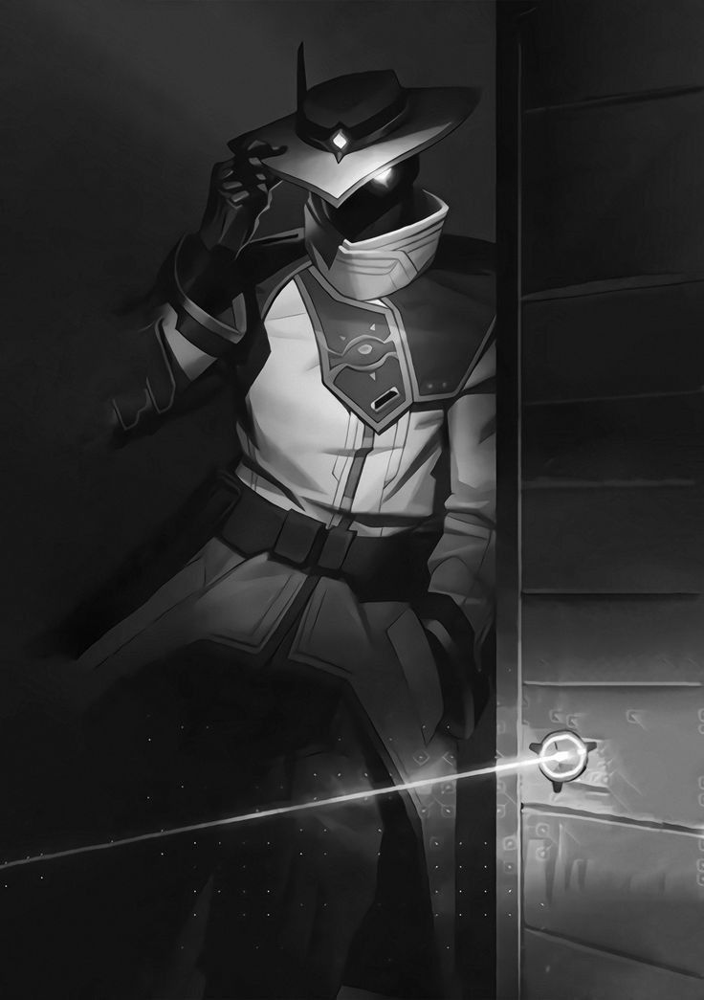

Yetenekler

Bubi Tuzağı (C):
İki duvar arasına yerleştirilen ve içinden geçen düşmanı yakalayıp açığa çıkaran bir tuzak.

Siber Kafes (Q):
Uzağa fırlatılabilen ve etkinleştirildiğinde görüşü engelleyen ve içinden geçen düşmanların yavaşladığı bir alan yaratan bir cihaz.

Gizli Kamera (E):
Duvarlara yerleştirilebilen ve düşmanları izleyip işaretleme iğnesi fırlatabilen bir kamera.

Nöron Hırsızlığı (X):
Yakınlardaki ölü bir düşmanın üzerinde kullanılarak hayatta olan tüm düşmanların yerini anlık olarak gösterir.